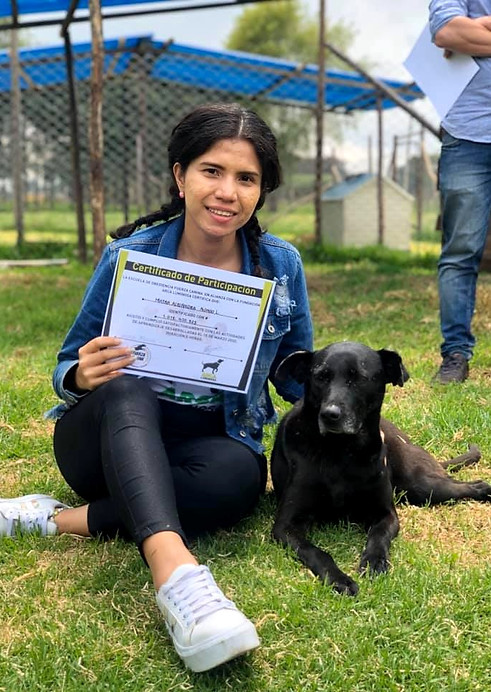

Tu responsabilidad
Abrís un espacio en tu casa o apartamento para recibir de forma temporal a un perrito rescatado y cuidar de él mientras la fundación le busca hogar definitivo.
Hogares de paso
Nuestra fundación no cuenta con un refugio o lote propio: trabajamos en equipo con nuestros hogares de paso para cambiar la vida de cientos de animales. ¡Vos podés ser parte del cambio!

¿En qué consiste?
Abrís un espacio en tu casa o apartamento para recibir de forma temporal a un perrito rescatado y cuidar de él mientras la fundación le busca hogar definitivo.
Arca Luminosa asume los gastos veterinarios del perrito durante toda su estadía en tu hogar de paso.
También cubrimos los gastos de alimentación mientras el perrito esté bajo tu cuidado.
El tiempo de permanencia se define al inicio del proceso, según la disponibilidad de cada hogar de paso.
Si te encariñás
Sabemos que abrir tu casa a un perrito rescatado puede terminar en amor. Por eso, si te encariñás con el perrito que estás hospedando, el hogar de paso siempre tendrá prioridad de adopción sobre él.
Inscribirme como hogar de pasoResumen rápido
Antes de inscribirte
Sé la casa que un perrito necesita